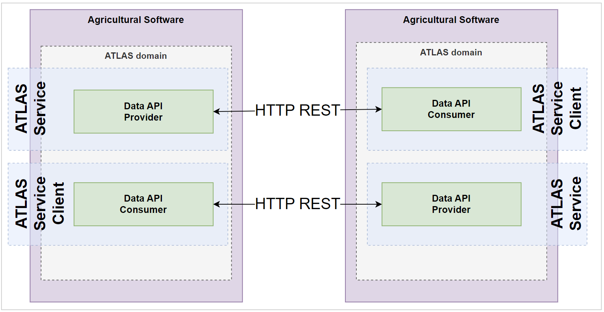

| Term | Definition |
| Identifier | livestock_delivery_tracke_trace |
| Creator | dev.house GmbH |
| Version | 1.0 |
| Description | see context information |
| Preconditions for the implementor | 1. Knowledge about REST and HTTPS 2. Technical protocols HTTPS and REST are supported on both sides (the data platforms and farming software provider) |
| Sequences and flows | Example Service Deployment View: This view deals as an example for a possible deployment of the service and the consumer implementation. It makes clear that a participant is not limited to only be provide OR consumer but of course can be both. |
| Exceptions and error codes | The error handling is strictly REST. There are no special error codes needed. |